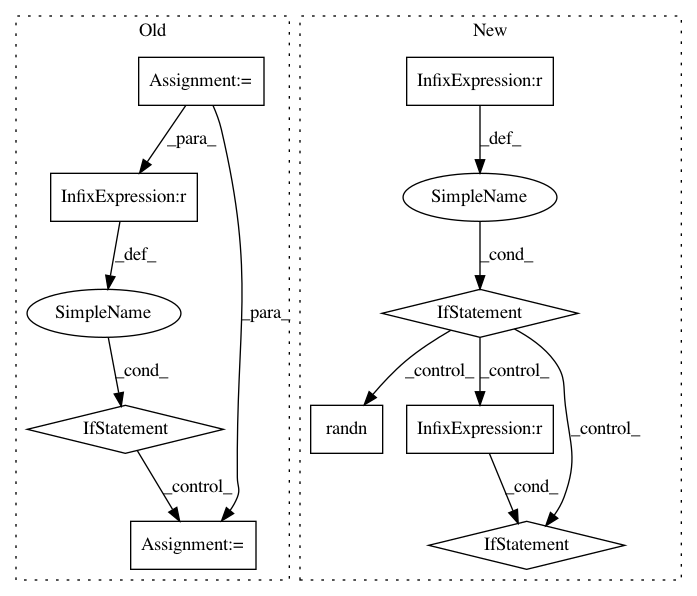

d44475866914c19f23c0f8a833951f9989250334,gpytorch/kernels/kernel.py,Kernel,__init__,#Kernel#Any#Any#Any#Any#Any#Any#Any#,88
Before Change
):
lengthscale_prior = _deprecate_kwarg(kwargs, "log_lengthscale_prior", "lengthscale_prior", lengthscale_prior)
super(Kernel, self).__init__()
if active_dims is not None and not torch.is_tensor(active_dims):
active_dims = torch.tensor(active_dims, dtype=torch.long)
self.register_buffer("active_dims", active_dims)
self.ard_num_dims = ard_num_dims
self.batch_size = batch_size
self.__has_lengthscale = has_lengthscale
After Change
* Default: No lengthscale (i.e. :math:`\Theta` is the identity matrix).
* Single lengthscale: One lengthscale can be applied to all input dimensions/batches
(i.e. :math:`\Theta` is a constant diagonal matrix).
This is controlled by setting `has_lengthscale=True`.
* ARD: Each input dimension gets its own separate lengthscale
(i.e. :math:`\Theta` is a non-constant diagonal matrix).
This is controlled by the `ard_num_dims` keyword argument (as well has `has_lengthscale=True`).
In batch-mode (i.e. when :math:`x_1` and :math:`x_2` are batches of input matrices), each
batch of data can have its own lengthscale parameter by setting the `batch_size`
keyword argument to the appropriate number of batches.
.. note::
The :attr:`lengthscale` parameter is parameterized on a log scale to constrain it to be positive.
You can set a prior on this parameter using the :attr:`lengthscale_prior` argument.
In pattern: SUPERPATTERN
Frequency: 3
Non-data size: 9
Instances
Project Name: cornellius-gp/gpytorch
Commit Name: d44475866914c19f23c0f8a833951f9989250334
Time: 2018-11-17
Author: balandat@fb.com
File Name: gpytorch/kernels/kernel.py
Class Name: Kernel
Method Name: __init__
Project Name: cornellius-gp/gpytorch
Commit Name: 9c526695805c9639896b31364958d0e77bdeba62
Time: 2018-11-14
Author: gardner.jake@gmail.com
File Name: gpytorch/kernels/kernel.py
Class Name: Kernel
Method Name: __init__
Project Name: Microsoft/nni
Commit Name: 6126960c57919dc71237609c76c2d0449834c24c
Time: 2020-10-10
Author: 38930155+chicm-ms@users.noreply.github.com
File Name: examples/model_compress/amc/amc_train.py
Class Name:
Method Name: get_model